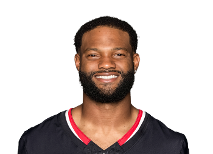

BALL KEEP
Dynasty · Redraft
Player File · WR HOU

Nico Collins
WR · HOU · 27 · Michigan
The tape
Nico Collins is the receiver our long boards cannot agree on. PFN has him 18th. Dynasty Nerds 42nd. KTC 38th. Average 32.67, Keep #33. That spread is the story: one camp sees a WR1 trapped in a mediocre passing game, the other sees a WR3 with a nice highlight reel. The 2025 touchdown clip — going up and getting it — is the first camp's exhibit A.
Yates putting him 39th in PPR is closer to the colder dynasty boards. Weekly Houston can be a desert. When it rains, Collins looks like a top-12 receiver. Superflex managers with a stable WR1 should be fine holding Collins as WR2. Managers who need a weekly lock should look at St. Brown.
Plus
- Keep #33 — Texans WR1 talent when the volume is there; Yates still has him as a usable WR2.
- Size/speed profile that produces chunk plays even in messy Houston weeks.
Minus
- PFN 18 vs Nerds 42 is a huge board split; someone is wrong by two tiers.
- Texans passing-game volatility is why he is not in the JSN/Nacua band.
Board graph
Spread 27–42 · 28 sources
Every Board
Spread 27–42 · 28 sources
| Source | Rank |
|---|---|
| PFN (Katz/Soppe) | 27 |
| Fantasy Life | 27 |
| RotoWire | 28 |
| FantasyPros ECR | 33 |
| PFF Dynasty | 34 |
| The Athletic | 35 |
| Yahoo Fantasy | 35 |
| Rotoworld | 35 |
| Sleeper Superflex | 35 |
| Underdog ADP | 35 |
| 4for4 | 35 |
| FFToday | 35 |
| Contender desk | 35 |
| DLF ADP mix | 35 |
| ESPN (Karabell) | 36 |
| Dynasty Trade Calculator | 36 |
| CBS Sports | 37 |
| Footballguys | 37 |
| Fantasy Alarm | 37 |
| DLF Superflex | 38 |
| Fantasy Footballers | 38 |
| Establish The Run | 38 |
| numberFire | 38 |
| PlayerProfiler | 38 |
| WalterFootball | 38 |
| Rebuild desk | 38 |
| KeepTradeCut SF | 39 |
| Dynasty Nerds | 42 |
Tape · 2025 season
Nico Collins gets vertical for the touchdown
BK News
All player pages · The Keep · The Board · Recent deals · Hot 'n' Cold · BK News · Trade calculator